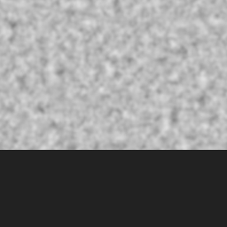
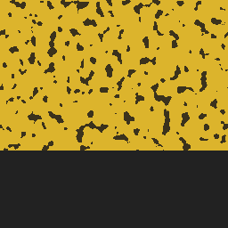
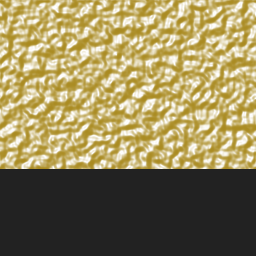
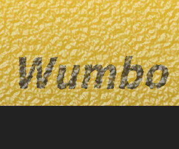
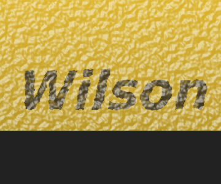

Isolated layers
dimples
erosion
highlights
Full composition examples
flat baseline (no wear)
full composition: Wumbo
full composition: Wilson
full composition: AVP
Tiling proof (red lines = tile boundaries; texture should flow through)